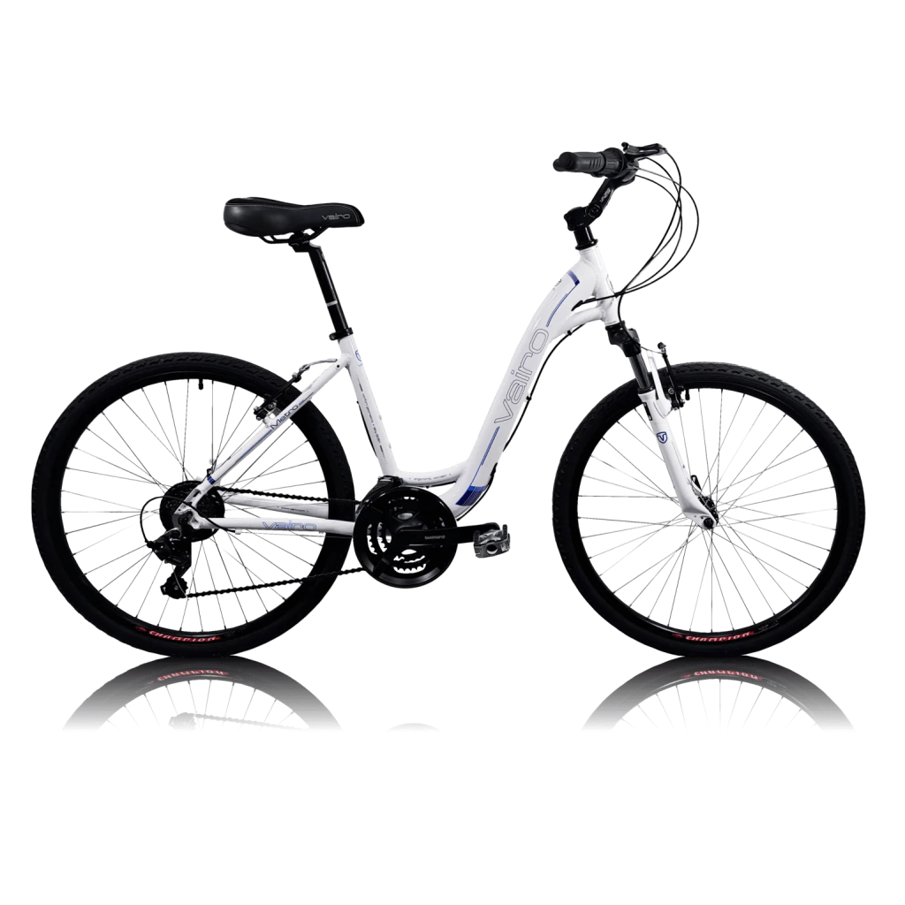
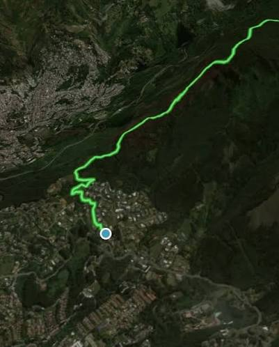

Alquiler de bicicletas
Para alquilar es necesario realizar la reserva con 12 horas de anticipación. De lo contrario, no podemos garantizar la disponibilidad de la bicicleta ni de sus implementos básicos. Ofrecemos facilidades de pago.


¿Eres ciclista profesional, aficionado o quieres disfrutar de un fin de semana diferente? Aquí podrás encontrar la bicicleta que mejor se adapte a tus necesidades y alquilarla por el tiempo que desees.
Somos una empresa emergente, fundada por un grupo de jóvenes emprendedores apasionados por el ciclismo y la movilidad sostenible. Nuestro objetivo es promover el uso de la bicicleta como medio de transporte y recreación, ofreciendo un servicio de alquiler accesible y confiable para los amantes del ciclismo en Medellín.
Para alquilar es necesario realizar la reserva con 12 horas de anticipación. De lo contrario, no podemos garantizar la disponibilidad de la bicicleta ni de sus implementos básicos. Ofrecemos facilidades de pago.

Descubre una forma cómoda de recorrer Medellín con bicicletas eléctricas que ofrecen asistencia al pedaleo. Consulta la disponibilidad y las condiciones del servicio antes de realizar tu reserva.

Consultar la ubicación del Mirador La Paloma en Google Maps
Distancia: 10 km. Nivel: intermedio. Duración aproximada: 2 horas.
El recorrido incluye guía certificado y equipo de seguridad.
Contamos con un seguro de responsabilidad civil que, según sus condiciones, cubre accidentes o daños a terceros durante el uso de nuestras bicicletas. Además, ofrecemos asistencia en carretera para atender eventualidades durante el alquiler.
Para alquilar una bicicleta, sigue estos pasos:
Si deseas información sobre nuestros servicios, reservas o recorridos, puedes escribirnos por correo electrónico:
Correo electrónico: ruedalibre@gmail.com